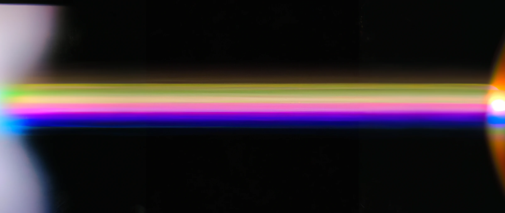
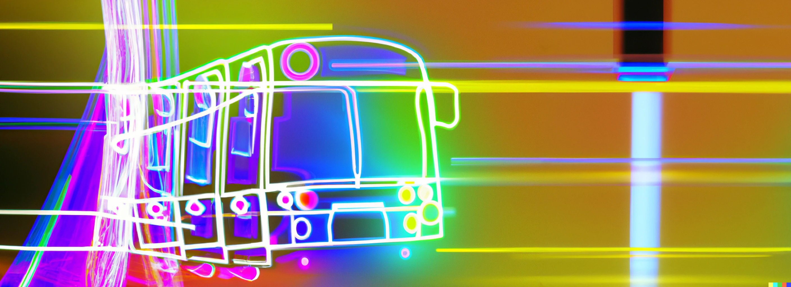

PROJECTS

Raspberry Pi Setup
Raspberry Pi 4b Raspbian installation with 3D printed case and display of stats.

Matrix Twitter Bot
Twitter bot in Python that publishes Matrix movie frames every hour.

Movie Color Visualization
Python script that extracts average color of each second of a movie and creates image with color bars.

Website Design and Hosting
Website design and development, including domain purchase, free hosting, and Cloudflare HTTPS configuration.

Transport times
App public transport wait times

Planning App
Mobile app for finding out the best weekend to do an activity some friends